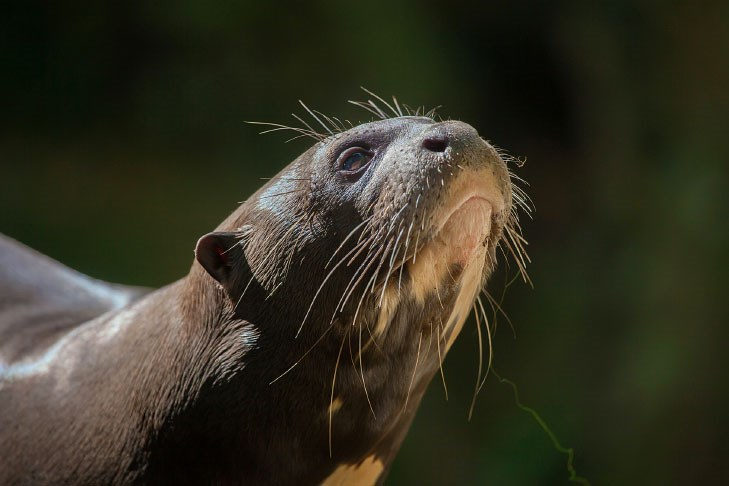
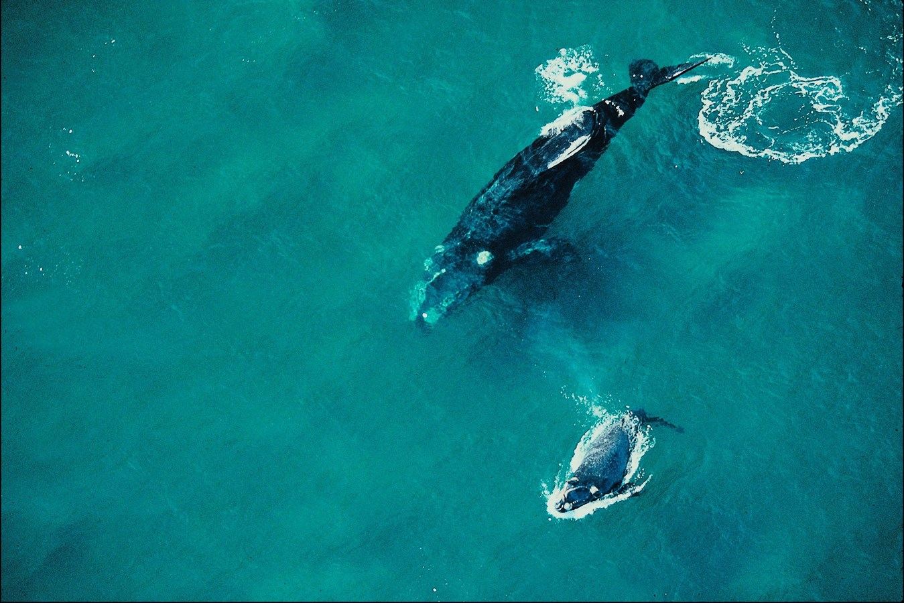
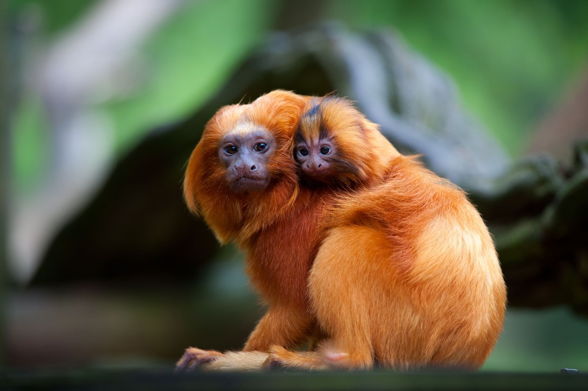
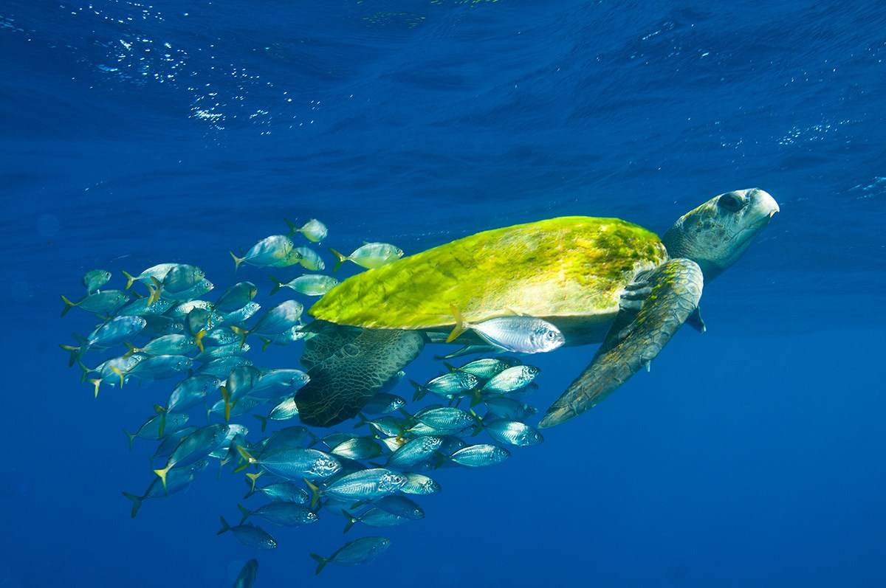
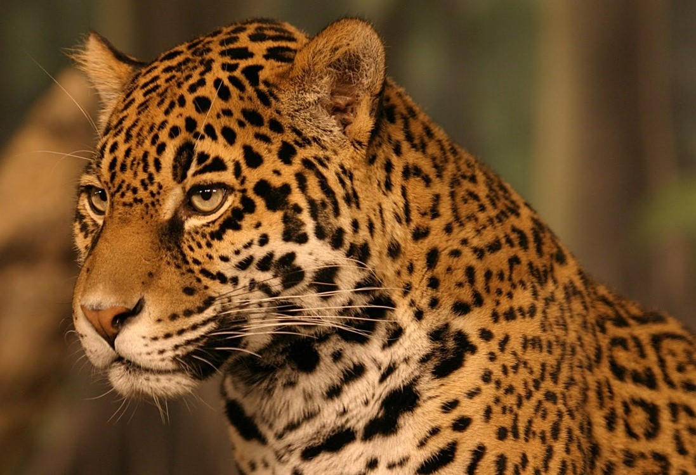

endangered animals in Brazil
-

- 
- 
- 
- 
- 
Blue Macaw
The beautiful blue macaw is much coveted by hunters because its wings have great value in the international market. It suffers, therefore, with traffic, illegal hunting and deforestation. Lives in the Amazon and Pantanal.
Ariranha
The contamination of rivers by mercury has been the greater enemy of the ariranha, also known like wolf of the river or giant otter. But illegal hunting, predatory fishing and other types of river graves of flights. It is found in the Pantanal and Amazon.
South-French-Whale
Found in the Brazilian coast, it is also called the South-French-Whale or the Southern-French-Whale. Suffer with hunting, fishing and water pollution, especially plastics.
Golden-lion-tamarin
For very little, the Golden-lion-tamarin was not extinct. Campaigns for your salvation over decades help maintain the species. It is from the Atlantic Forest and the few remaining individuals are restricted to remnants of forests in the state of Rio de Janeiro.
Olive-Turtle
It is considered migratory, but mainly spawns between the south coast of Alagoas and the north of Bahia. Long-range means of defense can slow down the collection of your eggs, but it still has a illegal hunting, by-catch and water pollution.
Jaguar
The largest cat in the Americas suffers from the destruction of its habitat and illegal hunting to trade its skin, which has great sales value in the world market. She lives in all Brazilian biomes, but is no longer found in the Pampa, where it is already extinct.